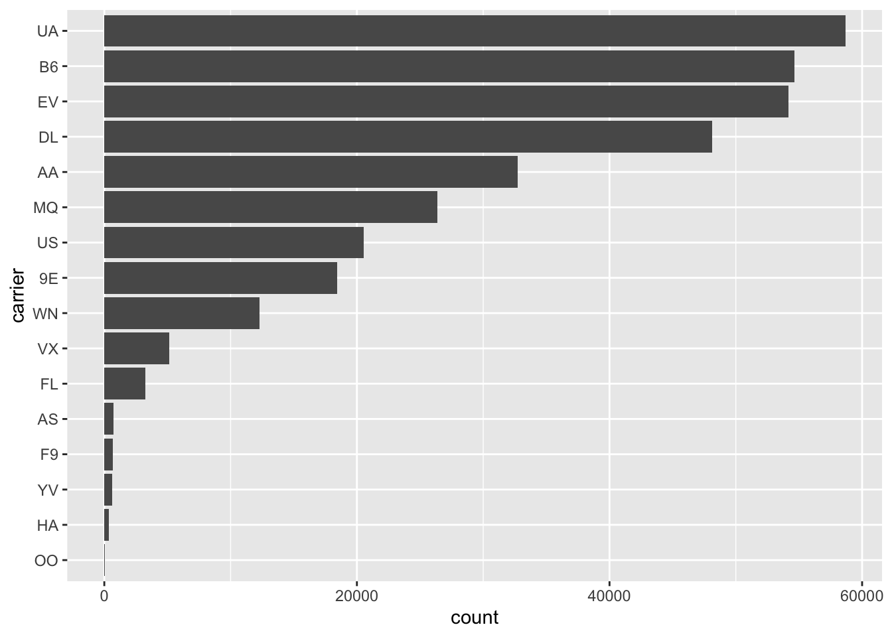
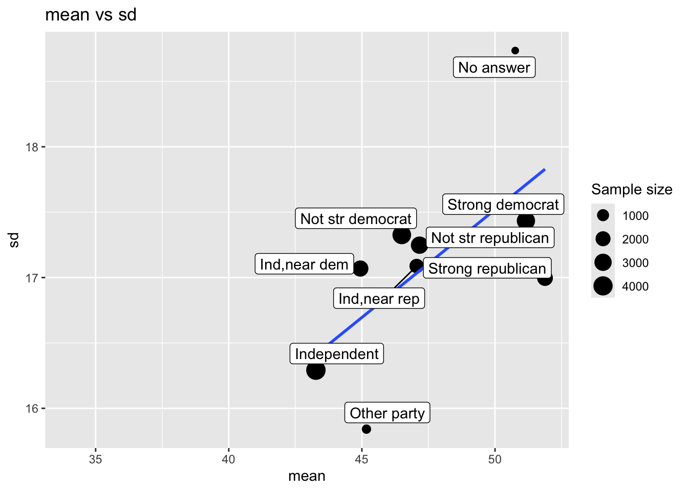
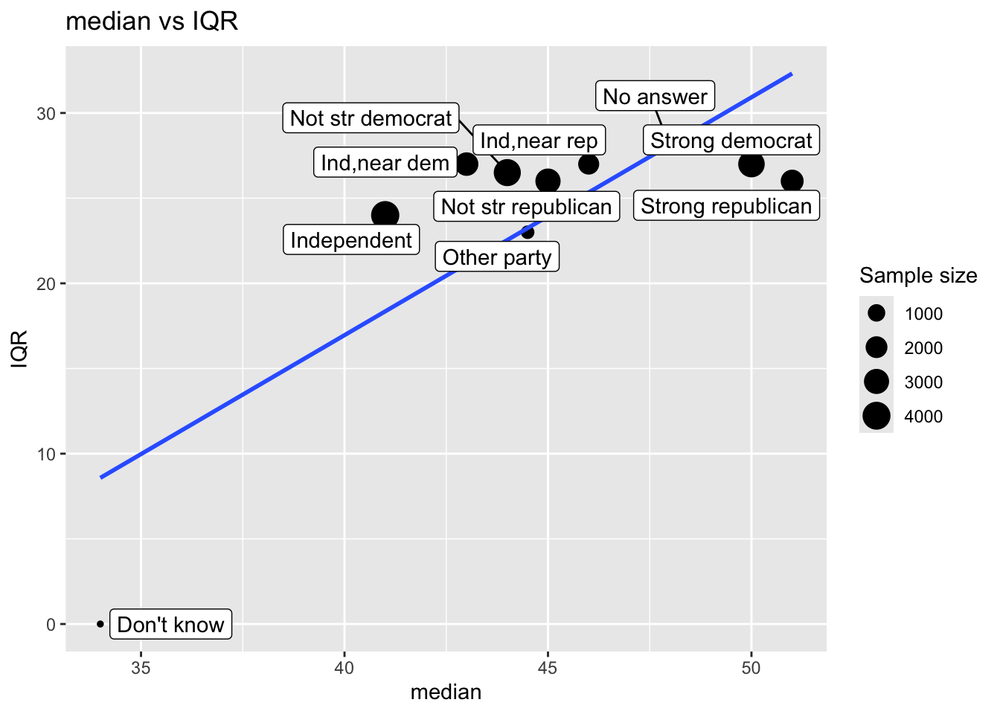

# Initial packages required (we'll be adding more)
library(tidyverse)
library(nycflights13)Functions and tidy evaluation
Based on Chapter 25 from R for Data Science
You can download this .qmd file from here. Just hit the Download Raw File button.
Introduction (from Ch 25 of R4DS)
One of the best ways to improve your reach as a data scientist is to write functions. Functions allow you to automate common tasks in a more powerful and general way than copy-and-pasting. Writing a function has four big advantages over using copy-and-paste:
- You can give a function an evocative name that makes your code easier to understand.
- As requirements change, you only need to update code in one place, instead of many.
- You eliminate the chance of making incidental mistakes when you copy and paste (i.e. updating a variable name in one place, but not in another).
- It makes it easier to reuse work from project-to-project, increasing your productivity over time.
A good rule of thumb is to consider writing a function whenever you’ve copied and pasted a block of code more than twice (i.e. you now have three copies of the same code). We’ll learn about three useful types of functions:
- Vector functions take one or more vectors as input and return a vector as output.
- Data frame functions take a data frame as input and return a data frame as output.
- Plot functions that take a data frame as input and return a plot as output.
Do not Repeat Yourself: Also known as DRY, if you copy or paste code more than twice, you should write a function instead.
When writing a function, it is usually best to start with the code you know works for one instance, and then “function-ize” it.
Vector functions
Example 1: Rescale variables from 0 to 1.
This code creates a 10 x 4 tibble filled with random values taken from a normal distribution with mean 0 and SD 1
df <- tibble(
a = rnorm(10),
b = rnorm(10),
c = rnorm(10),
d = rnorm(10)
)
df# A tibble: 10 × 4
a b c d
<dbl> <dbl> <dbl> <dbl>
1 0.665 0.856 -0.178 0.411
2 -0.668 0.332 0.855 -0.265
3 -0.340 0.250 0.658 -1.32
4 1.72 -0.0992 0.0180 -1.38
5 -0.958 0.577 -1.54 0.462
6 1.06 0.742 -0.569 0.0529
7 -0.592 0.492 -0.189 0.0786
8 1.55 0.814 -0.452 -1.31
9 -1.09 -1.41 -1.34 -0.0279
10 0.512 0.897 1.36 0.242 This code below for rescaling variables from 0 to 1 is ripe for functions… we did it four times!
It’s easiest to start with working code and turn it into a function.
df$a <- (df$a - min(df$a)) / (max(df$a) - min(df$a))
df$b <- (df$b - min(df$b)) / (max(df$b) - min(df$b))
df$c <- (df$c - min(df$c)) / (max(df$c) - min(df$c))
df$d <- (df$d - min(df$d)) / (max(df$d) - min(df$d))
df# A tibble: 10 × 4
a b c d
<dbl> <dbl> <dbl> <dbl>
1 0.623 0.982 0.471 0.972
2 0.149 0.755 0.827 0.606
3 0.266 0.720 0.759 0.0342
4 1 0.569 0.538 0
5 0.0456 0.861 0 1
6 0.764 0.933 0.336 0.778
7 0.176 0.824 0.467 0.792
8 0.939 0.964 0.376 0.0416
9 0 0 0.0690 0.735
10 0.569 1 1 0.881 Notice first what changes and what stays the same in each line. Then, if we look at the first line above, we see we have one value we’re using over and over: df$a. So our function will have one input. We’ll start with our code from that line, then replace the input (df$a) with x. We should give our function a name that explains what it does. The name should be a verb.
# I'm going to show you how to write the function in class!
# I have it in the code already below, but don't look yet!
# Let's try to write it together first!. . . . . . . . .
# Our function (first draft!)
rescale01 <- function(x) {
(x - min(x)) / (max(x) - min(x))
}Note the general form of a function:
name <- function(arguments) {
body
}Every function contains 3 essential components:
- A name. The name should clearly evoke what the function does; hence, it is often a verb (action). Here we’ll use rescale01 because this function rescales a vector to lie between 0 and 1. snake_case is good; CamelCase is just okay.
- The arguments. The arguments are things that vary across calls and they are usually nouns - first the data, then other details. Our analysis above tells us that we have just one; we’ll call it x because this is the conventional name for a numeric vector, but you can use any word.
- The body. The body is the code that’s repeated across all the calls. By default a function will return the last statement; use
return()to specify a return value
Summary: Functions should be written for both humans and computers!
Once we have written a function we like, then we need to test it with different inputs!
temp <- c(4, 6, 8, 9)
rescale01(temp)[1] 0.0 0.4 0.8 1.0temp0 <- c(4, 6, 8, 9, NA)
rescale01(temp0) [1] NA NA NA NA NAOK, so NA’s don’t work the way we want them to.
rescale01 <- function(x) {
(x - min(x, na.rm = TRUE)) / (max(x, na.rm = TRUE) - min(x, na.rm = TRUE)) # fix the NA value by using na.rm = TRUE, the vector has become NA value in it . Function linke min() and max() do not ignore NA by defualt which removes NA value when doing calculation
}
rescale01(temp)[1] 0.0 0.4 0.8 1.0rescale01(temp0)[1] 0.0 0.4 0.8 1.0 NAWe can continue to improve our function. Here is another method, which uses the existing range function within R to avoid 3 max/min executions:
rescale01 <- function(x) {
rng <- range(x, na.rm = TRUE)
(x - rng[1]) / (rng[2] - rng[1])
}
rescale01(temp)[1] 0.0 0.4 0.8 1.0rescale01(c(0, 5, 10))[1] 0.0 0.5 1.0rescale01(c(-10, 0, 10))[1] 0.0 0.5 1.0rescale01(c(1, 2, 3, NA, 5))[1] 0.00 0.25 0.50 NA 1.00We should continue testing unusual inputs. Think carefully about how you want this function to behave… the current behavior is to include the Inf (infinity) value when calculating the range. You get strange output everywhere, but it’s pretty clear that there is a problem right away when you use the function. In the example below (rescale1), you ignore the infinity value when calculating the range. The function returns Inf for one value, and sensible stuff for the rest. In many cases this may be useful, but it could also hide a problem until you get deeper into an analysis.
x <- c(1:10, Inf)
rescale01(x) [1] 0 0 0 0 0 0 0 0 0 0 NaNrescale1 <- function(x) {
rng <- range(x, na.rm = TRUE, finite = TRUE)
(x - rng[1]) / (rng[2] - rng[1])
}
rescale1(x) [1] 0.0000000 0.1111111 0.2222222 0.3333333 0.4444444 0.5555556 0.6666667
[8] 0.7777778 0.8888889 1.0000000 InfNow we’ve used functions to simplify original example. We will learn to simplify further in iterations (Ch 26)
#just create radom data frame and add NA and Inf
df <- tibble(
a = rnorm(10),
b = rnorm(10),
c = rnorm(10),
d = rnorm(10)
)
# add a little noise
df$a[5] = NA # change 5th value of column a to NA
df$b[6] = Inf # change the 6th value of collumn b to inf
df# A tibble: 10 × 4
a b c d
<dbl> <dbl> <dbl> <dbl>
1 0.911 0.0431 -0.199 -1.04
2 1.15 1.86 2.45 -2.47
3 -0.442 0.0298 0.231 1.13
4 1.50 0.336 -0.336 -1.89
5 NA 0.158 -0.604 -0.538
6 1.32 Inf 1.43 0.614
7 -1.54 -2.11 1.13 -1.15
8 -1.11 0.804 -1.12 0.0537
9 -0.225 -0.459 1.70 -1.18
10 1.27 -1.45 1.16 1.35 # create new rescaled column one by one
df$a_new <- rescale1(df$a)
df$b_new <- rescale1(df$b)
df$c_new <- rescale1(df$c)
df$d_new <- rescale1(df$d)
df# A tibble: 10 × 8
a b c d a_new b_new c_new d_new
<dbl> <dbl> <dbl> <dbl> <dbl> <dbl> <dbl> <dbl>
1 0.911 0.0431 -0.199 -1.04 0.805 0.542 0.258 0.374
2 1.15 1.86 2.45 -2.47 0.882 1 1 0
3 -0.442 0.0298 0.231 1.13 0.361 0.539 0.379 0.941
4 1.50 0.336 -0.336 -1.89 1 0.616 0.220 0.152
5 NA 0.158 -0.604 -0.538 NA 0.571 0.145 0.505
6 1.32 Inf 1.43 0.614 0.939 Inf 0.714 0.806
7 -1.54 -2.11 1.13 -1.15 0 0 0.631 0.346
8 -1.11 0.804 -1.12 0.0537 0.142 0.734 0 0.660
9 -0.225 -0.459 1.70 -1.18 0.433 0.415 0.789 0.338
10 1.27 -1.45 1.16 1.35 0.922 0.166 0.639 1 #do the same thing with mutate
df |>
select(1:4) |> # keep only 4 columns ( a, b, c,d)
mutate(a_new = rescale1(a),
b_new = rescale1(b),
c_new = rescale1(c),
d_new = rescale1(d))# A tibble: 10 × 8
a b c d a_new b_new c_new d_new
<dbl> <dbl> <dbl> <dbl> <dbl> <dbl> <dbl> <dbl>
1 0.911 0.0431 -0.199 -1.04 0.805 0.542 0.258 0.374
2 1.15 1.86 2.45 -2.47 0.882 1 1 0
3 -0.442 0.0298 0.231 1.13 0.361 0.539 0.379 0.941
4 1.50 0.336 -0.336 -1.89 1 0.616 0.220 0.152
5 NA 0.158 -0.604 -0.538 NA 0.571 0.145 0.505
6 1.32 Inf 1.43 0.614 0.939 Inf 0.714 0.806
7 -1.54 -2.11 1.13 -1.15 0 0 0.631 0.346
8 -1.11 0.804 -1.12 0.0537 0.142 0.734 0 0.660
9 -0.225 -0.459 1.70 -1.18 0.433 0.415 0.789 0.338
10 1.27 -1.45 1.16 1.35 0.922 0.166 0.639 1 # Even better - from Chapter 26
df |>
select(1:4) |>
mutate(across(a:d, rescale1, .names = "{.col}_new"))# A tibble: 10 × 8
a b c d a_new b_new c_new d_new
<dbl> <dbl> <dbl> <dbl> <dbl> <dbl> <dbl> <dbl>
1 0.911 0.0431 -0.199 -1.04 0.805 0.542 0.258 0.374
2 1.15 1.86 2.45 -2.47 0.882 1 1 0
3 -0.442 0.0298 0.231 1.13 0.361 0.539 0.379 0.941
4 1.50 0.336 -0.336 -1.89 1 0.616 0.220 0.152
5 NA 0.158 -0.604 -0.538 NA 0.571 0.145 0.505
6 1.32 Inf 1.43 0.614 0.939 Inf 0.714 0.806
7 -1.54 -2.11 1.13 -1.15 0 0 0.631 0.346
8 -1.11 0.804 -1.12 0.0537 0.142 0.734 0 0.660
9 -0.225 -0.459 1.70 -1.18 0.433 0.415 0.789 0.338
10 1.27 -1.45 1.16 1.35 0.922 0.166 0.639 1 Options for handling NAs in functions
Before we try some practice problems, let’s consider various options for handling NAs in functions. We used the na.rm option within functions like min, max, and range in order to take care of missing values. But there are alternative approaches:
- filter/remove the NA values before rescaling
- create an if statement to check if there are NAs; return an error if NAs exist
- create a removeNAs option in the function we are creating
Let’s take a look at each alternative approach in turn:
Filter/remove the NA values before rescaling
df <- tibble(
a = rnorm(10),
b = rnorm(10),
c = rnorm(10),
d = rnorm(10)
)
df$a[5] = NA
df# A tibble: 10 × 4
a b c d
<dbl> <dbl> <dbl> <dbl>
1 -1.54 -0.761 1.74 0.881
2 2.08 -0.664 -0.0935 0.237
3 0.790 -0.421 0.229 1.19
4 -0.525 -0.616 -0.304 -0.142
5 NA -1.93 -1.07 -0.291
6 -1.40 -2.37 -1.23 -0.618
7 0.352 0.457 0.920 -1.34
8 -0.123 0.0133 -1.50 -0.659
9 -0.0520 1.38 0.184 -0.219
10 -0.281 -1.05 -0.427 -0.689rescale_basic <- function(x) {
(x - min(x)) / (max(x) - min(x))
}
df |>
filter(!is.na(a)) |>
mutate(new_a = rescale_basic(a))# A tibble: 9 × 5
a b c d new_a
<dbl> <dbl> <dbl> <dbl> <dbl>
1 -1.54 -0.761 1.74 0.881 0
2 2.08 -0.664 -0.0935 0.237 1
3 0.790 -0.421 0.229 1.19 0.643
4 -0.525 -0.616 -0.304 -0.142 0.280
5 -1.40 -2.37 -1.23 -0.618 0.0371
6 0.352 0.457 0.920 -1.34 0.522
7 -0.123 0.0133 -1.50 -0.659 0.391
8 -0.0520 1.38 0.184 -0.219 0.410
9 -0.281 -1.05 -0.427 -0.689 0.347 [Pause to Ponder:] Do you notice anything in the output above that gives you pause?
We get fewer row: The row that has NA value before disappear completely which can be dangerous if we want to keeep all rows
Create an if statement to check if there are NAs; return an error if NAs exist
First, here’s an example involving weighted means:
# Create function to calculate weighted mean
wt_mean <- function(x, w) {
sum(x * w) / sum(w)
}
wt_mean(c(1, 10), c(1/3, 2/3)) #values 1,10 and weight 1/3,2/3[1] 7wt_mean(1:6, 1:3) # a problem cus x has length 6, w has length 3[1] 7.666667#R recycle the weights so x:123456, w:123123[Pause to Ponder:] Why is the answer to the last call above 7.67? Aren’t we taking a weighted mean of 1-6, all of which are below 7?
x has 6 length: 123456 while w only has 3 length 123 so R recycles the weights to 123123
# update function to handle cases where data and weights of unequal length
wt_mean <- function(x, w) {
if (length(x) != length(w)) {
stop("`x` and `w` must be the same length", call. = FALSE)
} else {
sum(w * x) / sum(w)
}
}
wt_mean(1:6, 1:3) Error:
! `x` and `w` must be the same length# should produce an error now if weights and data different lengths
# - nice example of if and else[Pause to Ponder:] What does the call. option do? Make the error message become cleaner, it tells the R where the error is
Now let’s apply this to our rescaling function
rescale_w_error <- function(x) {
if (is.na(sum(x))) {
stop("`x` cannot have NAs", call. = FALSE)
} else {
(x - min(x)) / (max(x) - min(x))
}
}
temp <- c(4, 6, 8, 9)
rescale_w_error(temp)[1] 0.0 0.4 0.8 1.0temp <- c(4, 6, 8, 9, NA)
rescale_w_error(temp)Error:
! `x` cannot have NAs[Pause to Ponder:] Why can’t we just use if (is.na(x)) instead of is.na(sum(x))? (is.na(x))` only gives the TRUE or FALSE value for each element
Create a removeNAs option in the function we are creating
rescale_NAoption <- function(x, removeNAs = FALSE) {
(x - min(x, na.rm = removeNAs)) /
(max(x, na.rm = removeNAs) - min(x, na.rm = removeNAs))
}
temp <- c(4, 6, 8, 9)
rescale_NAoption(temp)[1] 0.0 0.4 0.8 1.0temp <- c(4, 6, 8, 9, NA)
rescale_NAoption(temp, removeNAs = TRUE)[1] 0.0 0.4 0.8 1.0 NAOK, but all the other summary stats functions use na.rm as the input, so to be consistent, it’s probably better to do something slightly awkward like this:
rescale_NAoption <- function(x, na.rm = FALSE) {
(x - min(x, na.rm = na.rm)) /
(max(x, na.rm = na.rm) - min(x, na.rm = na.rm))
}
temp <- c(4, 6, 8, 9, NA)
rescale_NAoption(temp, na.rm = TRUE)[1] 0.0 0.4 0.8 1.0 NAwt_mean() is an example of a “summary function (single value output) instead of a”mutate function” (vector output) like rescale01(). Here’s another summary function to produce the mean absolute percentage error:
mape <- function(actual, predicted) {
sum(abs((actual - predicted) / actual)) / length(actual)
}
y <- c(2,6,3,8,5)
yhat <- c(2.5, 5.1, 4.4, 7.8, 6.1)
mape(actual = y, predicted = yhat)[1] 0.2223333Data frame functions
These work like dplyr verbs, taking a data frame as the first argument, and then returning a data frame or a vector.
Demonstration of tidy evaluation in functions
# Start with working code then functionize
ggplot(data = mpg, mapping = aes(x = cty, y = hwy)) +
geom_point(size = 0.75) +
geom_smooth()`geom_smooth()` using method = 'loess' and formula = 'y ~ x'
make_plot <- function(dataset, xvar, yvar, pt_size = 0.75) {
ggplot(data = dataset, mapping = aes(x = xvar, y = yvar)) +
geom_point(size = pt_size) +
geom_smooth()
}
make_plot(dataset = mpg, xvar = cty, yvar = hwy) # Error!Error in `geom_point()`:
! Problem while computing aesthetics.
ℹ Error occurred in the 1st layer.
Caused by error:
! object 'cty' not foundThe problem is tidy evaluation, which makes most common coding easier, but makes some less common things harder. Key terms to understand tidy evaluation:
- env-variables = live in the environment (mpg)
- data-variables = live in data frame or tibble (cty)
- data masking = tidyverse use data-variables as if they are env-variables. That is, you don’t always need
mpg$ctyto accessctyin tidyverse
The key idea behind data masking is that it blurs the line between the two different meanings of the word “variable”:
- env-variables are “programming” variables that live in an environment. They are usually created with <-.
- data-variables are “statistical” variables that live in a data frame. They usually come from data files (e.g. .csv, .xls), or are created manipulating existing variables.
The solution is to embrace {{ }} data-variables which are user inputs into functions. One way to remember what’s happening, as suggested by our book authors, is to think of {{ }} as looking down a tunnel — {{ var }} will make a dplyr function look inside of var rather than looking for a variable called var. Thus, embracing a variable tells dplyr to use the value stored inside the argument, not the argument as the literal variable name.
See Section 25.3 of R4DS for more details (and there are plenty!).
# This will work to make our plot!
make_plot <- function(dataset, xvar, yvar, pt_size = 0.75) {
ggplot(data = dataset, mapping = aes(x = {{ xvar }}, y = {{ yvar }})) +
geom_point(size = pt_size) +
geom_smooth()
}
make_plot(dataset = mpg, xvar = cty, yvar = hwy)`geom_smooth()` using method = 'loess' and formula = 'y ~ x'
I often wish it were easier to get my own custom summary statistics for numeric variables in EDA rather than using mosaic::favstats(). Using group_by() and summarise() from the tidyverse reads clearly but takes so many lines, but if I only had to write the code once…
summary6 <- function(data, var) {
data |> summarize(
mean = mean({{ var }}, na.rm = TRUE),
median = median({{ var }}, na.rm = TRUE),
sd = sd({{ var }}, na.rm = TRUE),
IQR = IQR({{ var }}, na.rm = TRUE),
n = n(),
n_miss = sum(is.na({{ var }})),
.groups = "drop" # to leave the data in an ungrouped state
)
}
mpg |> summary6(hwy)# A tibble: 1 × 6
mean median sd IQR n n_miss
<dbl> <dbl> <dbl> <dbl> <int> <int>
1 23.4 24 5.95 9 234 0Even cooler, I can use my new function with group_by()!
mpg |>
group_by(drv) |>
summary6(hwy)# A tibble: 3 × 7
drv mean median sd IQR n n_miss
<chr> <dbl> <dbl> <dbl> <dbl> <int> <int>
1 4 19.2 18 4.08 5 103 0
2 f 28.2 28 4.21 3 106 0
3 r 21 21 3.66 7 25 0You can even pass conditions into a function using the embrace:
[Pause to Ponder:] Predict what the code below will do, and (only) then run it to check. Think about: why do we have sort = sort? why not embrace df? why didn’t we need n in the arguments? left side sort = is the argument inside count(), right side sort is the function input,use the user’s chosen value for sorting, we don’t embrace df because it is the dataset, not a data variable?
new_function <- function(df, var, condition, sort = TRUE) {
df |>
filter({{ condition }}) |>
count({{ var }}, sort = sort) |>
mutate(prop = n / sum(n))
}
mpg |> new_function(var = manufacturer,
condition = manufacturer %in% c("audi",
"honda",
"hyundai",
"nissan",
"subaru",
"toyota",
"volkswagen")
)Data-masking vs. tidy-selection (Section 25.3.4)
Why doesn’t the following code work?
count_missing <- function(df, group_vars, x_var) {
df |>
group_by({{ group_vars }}) |>
summarize(
n_miss = sum(is.na({{ x_var }})),
.groups = "drop"
)
}
flights |>
count_missing(c(year, month, day), dep_time)Error in `group_by()`:
ℹ In argument: `c(year, month, day)`.
Caused by error:
! `c(year, month, day)` must be size 336776 or 1, not 1010328.The problem is that group_by() uses data-masking rather than tidy-selection; it is selecting certain variables rather than evaluating values of those variables. These are the two most common subtypes of tidy evaluation:
- Data-masking is used in functions like arrange(), filter(), mutate(), and summarize() that compute with variables. Data masking is an R feature that blends programming variables that live inside environments (env-variables) with statistical variables stored in data frames (data-variables).
- Tidy-selection is used for functions like select(), relocate(), and rename() that select variables. Tidy selection provides a concise dialect of R for selecting variables based on their names or properties.
More detail can be found here.
The error above can be solved by using the pick() function, which uses tidy selection inside of data masking:
count_missing <- function(df, group_vars, x_var) {
df |>
group_by(pick({{ group_vars }})) |>
summarize(
n_miss = sum(is.na({{ x_var }})),
.groups = "drop"
)
}
flights |>
count_missing(c(year, month, day), dep_time)# A tibble: 365 × 4
year month day n_miss
<int> <int> <int> <int>
1 2013 1 1 4
2 2013 1 2 8
3 2013 1 3 10
4 2013 1 4 6
5 2013 1 5 3
6 2013 1 6 1
7 2013 1 7 3
8 2013 1 8 4
9 2013 1 9 5
10 2013 1 10 3
# ℹ 355 more rows[Pause to Ponder:] Here’s another nice use of pick(). Predict what the function will do, then run the code to see if you are correct. Using pick() tells R where to find that data frame within the tibble, We do not embrace df because it is the dataset, not a data variable.
# Source: https://twitter.com/pollicipes/status/1571606508944719876
new_function <- function(data, rows, cols) {
data |>
count(pick(c({{ rows }}, {{ cols }}))) |>
pivot_wider(
names_from = {{ cols }},
values_from = n,
names_sort = TRUE,
values_fill = 0
)
}
mpg |> new_function(c(manufacturer, model), cyl)Plot functions
Let’s say you find yourself making a lot of histograms:
flights |>
ggplot(aes(x = dep_time)) +
geom_histogram(bins = 25)
flights |>
ggplot(aes(x = air_time)) +
geom_histogram(bins = 35)
Just use embrace to create a histogram-making function
histogram <- function(df, var, bins = NULL) {
df |>
ggplot(aes(x = {{ var }})) +
geom_histogram(bins = bins)
}
flights |> histogram(air_time, 35)
Since histogram() returns a ggplot, you can add any layers you want
flights |>
histogram(air_time, 35) +
labs(x = "Flight time (minutes)", y = "Number of flights")
You can also combine data wrangling with plotting. Note that we need the “walrus operator” (:=) since the variable name on the left is being generated with user-supplied data.
# sort counts with highest values at top and counts on x-axis
sorted_bars <- function(df, var) {
df |>
mutate({{ var }} := fct_rev(fct_infreq({{ var }}))) |>
ggplot(aes(y = {{ var }})) +
geom_bar()
}
flights |> sorted_bars(carrier)
Finally, it would be really helpful to label plots based on user inputs. This is a bit more complicated, but still do-able!
For this, we’ll need the rlang package. rlang is a low-level package that’s used by just about every other package in the tidyverse because it implements tidy evaluation (as well as many other useful tools).
Check out the following update of our histogram() function which uses the englue() function from the rlang package:
histogram <- function(df, var, bins) {
label <- rlang::englue("A histogram of {{var}} with binwidth {bins}")
df |>
ggplot(aes(x = {{ var }})) +
geom_histogram(bins = bins) +
labs(title = label)
}
flights |> histogram(air_time, 35)
On Your Own
- Rewrite this code snippet as a function:
x / sum(x, na.rm = TRUE). This code creates weights which sum to 1, where NA values are ignored. Test it for at least two different vectors. (Make sure at least one has NAs!)
sokmean <- c(2, 3, 5, 7, 9)
tadie <- c( 2 , 4, 6, 8, 10)
weights <- function(x){
x / sum(x, na.rm = TRUE)
}
weights(sokmean) [1] 0.07692308 0.11538462 0.19230769 0.26923077 0.34615385weights(tadie)[1] 0.06666667 0.13333333 0.20000000 0.26666667 0.33333333sokmean <- c(2, 3, 5, NA, 9)
tadie <- c( 2 , 4, 6, 8, NA)
weights <- function(x){
x / sum(sokmean, na.rm = TRUE)
}
weights(sokmean) [1] 0.1052632 0.1578947 0.2631579 NA 0.4736842weights(tadie)[1] 0.1052632 0.2105263 0.3157895 0.4210526 NA- Create a function to calculate the standard error of a variable, where SE = square root of the variance divided by the sample size. Hint: start with a vector like
x <- 0:5orx <- gss_cat$ageand write code to find the SE of x, then turn it into a function to handle any vectorx. Note:varis the function to find variance in R andsqrtdoes square root.lengthmay also be handy. Test your function on two vectors that do not include NAs (i.e. do not worry about removing NAs at this point).
sokmeans_test <- 0 :10
tadies_test <- 0:15
# formula se = square root of variance/ sample size
se <- function(x) {
sqrt(var(x) / length(x))
}
se(sokmeans_test)[1] 1se(tadies_test)[1] 1.190238- Use your
sefunction within summarize to get a table of the mean and s.e. ofhwyandctybyclassin thempgdataset.
se <- function(x) {
sqrt(var(x) / length(x))
}
mpg |>
group_by(class) |>
summarize(
mean_hwy = mean(hwy),
se_hwy = se(hwy),
mean_cty = mean(cty),
se_cty = se(cty)
)# A tibble: 7 × 5
class mean_hwy se_hwy mean_cty se_cty
<chr> <dbl> <dbl> <dbl> <dbl>
1 2seater 24.8 0.583 15.4 0.245
2 compact 28.3 0.552 20.1 0.494
3 midsize 27.3 0.334 18.8 0.304
4 minivan 22.4 0.622 15.8 0.553
5 pickup 16.9 0.396 13 0.356
6 subcompact 28.1 0.909 20.4 0.778
7 suv 18.1 0.378 13.5 0.307- Use your
sefunction within summarize to get a table of the mean and s.e. ofarr_delayanddep_delayby carrier in theflightsdataset. Why does the output look like this?
se <- function(x) {
sqrt(var(x) / length(x))
}
flights |>
group_by(carrier) |>
summarize(
mean_arr_delay = mean(arr_delay),
se_arr_delay = se(arr_delay),
mean_dep_delay = mean(dep_delay),
se_dep_delay = se(dep_delay)
)# A tibble: 16 × 5
carrier mean_arr_delay se_arr_delay mean_dep_delay se_dep_delay
<chr> <dbl> <dbl> <dbl> <dbl>
1 9E NA NA NA NA
2 AA NA NA NA NA
3 AS NA NA NA NA
4 B6 NA NA NA NA
5 DL NA NA NA NA
6 EV NA NA NA NA
7 F9 NA NA NA NA
8 FL NA NA NA NA
9 HA -6.92 4.06 4.90 4.01
10 MQ NA NA NA NA
11 OO NA NA NA NA
12 UA NA NA NA NA
13 US NA NA NA NA
14 VX NA NA NA NA
15 WN NA NA NA NA
16 YV NA NA NA NA The output contains many NA value because in the variables arr_delay and dep_delay contain missing value. The output will return as NA for function like mean(), var() when include missing value unless we specify with na.rm = TRUE
- Make your
sefunction handle NAs with an na.rm option. Test your new function (you can call itseagain) on a vector that doesn’t include NA and on the same vector with an added NA. Be sure to check that it gives the expected output with na.rm = TRUE and na.rm = FALSE. Make na.rm = FALSE the default value. Repeat #4. (Hint: be sure when you divide by sample size you don’t count any NAs)
se <- function(x, na.rm = FALSE) {
if (na.rm == TRUE) {
x <- x[!is.na(x)]
}
sqrt(var(x) / length(x))
}
flights |>
group_by(carrier) |>
summarize(
mean_arr_delay = mean(arr_delay, na.rm = TRUE),
se_arr_delay = se(arr_delay, na.rm = TRUE),
mean_dep_delay = mean(dep_delay, na.rm = TRUE),
se_dep_delay = se(dep_delay,na.rm = TRUE )
)# A tibble: 16 × 5
carrier mean_arr_delay se_arr_delay mean_dep_delay se_dep_delay
<chr> <dbl> <dbl> <dbl> <dbl>
1 9E 7.38 0.381 16.7 0.348
2 AA 0.364 0.238 8.59 0.209
3 AS -9.93 1.37 5.80 1.18
4 B6 9.46 0.184 13.0 0.165
5 DL 1.64 0.203 9.26 0.182
6 EV 15.8 0.221 20.0 0.205
7 F9 21.9 2.36 20.2 2.23
8 FL 20.1 0.960 18.7 0.933
9 HA -6.92 4.06 4.90 4.01
10 MQ 10.8 0.273 10.6 0.247
11 OO 11.9 9.02 12.6 8.00
12 UA 3.56 0.170 12.1 0.148
13 US 2.13 0.235 3.78 0.199
14 VX 1.76 0.699 12.9 0.626
15 WN 9.65 0.427 17.7 0.394
16 YV 15.6 2.27 19.0 2.11 #in class1
se <- function(x, includeNAs) {
if(includeNAs){
x <-na.omit(x)
}
sqrt(var(x, na.rm = includeNAs) / length(x))
}
se(c(1:5, NA) , includeNAs = TRUE)[1] 0.7071068flights |>
group_by(carrier) |>
summarize(
mean_arr_delay = mean(arr_delay, na.rm = TRUE),
se_arr_delay = se(arr_delay, includeNAs = TRUE),
mean_dep_delay = mean(dep_delay, na.rm = TRUE),
se_dep_delay = se(dep_delay, includeNAs = TRUE)
)# A tibble: 16 × 5
carrier mean_arr_delay se_arr_delay mean_dep_delay se_dep_delay
<chr> <dbl> <dbl> <dbl> <dbl>
1 9E 7.38 0.381 16.7 0.348
2 AA 0.364 0.238 8.59 0.209
3 AS -9.93 1.37 5.80 1.18
4 B6 9.46 0.184 13.0 0.165
5 DL 1.64 0.203 9.26 0.182
6 EV 15.8 0.221 20.0 0.205
7 F9 21.9 2.36 20.2 2.23
8 FL 20.1 0.960 18.7 0.933
9 HA -6.92 4.06 4.90 4.01
10 MQ 10.8 0.273 10.6 0.247
11 OO 11.9 9.02 12.6 8.00
12 UA 3.56 0.170 12.1 0.148
13 US 2.13 0.235 3.78 0.199
14 VX 1.76 0.699 12.9 0.626
15 WN 9.65 0.427 17.7 0.394
16 YV 15.6 2.27 19.0 2.11 #in class2
se<- function(x, na.rm =FALSE) {
n <- length(x) - sum(is.na(x))
sqrt(var(x, na.rm = na.rm) / length(x))
}
se(c(1:5, NA), na.rm = TRUE)[1] 0.6454972se(1:5)[1] 0.7071068- Create
both_na(), a function that takes two vectors of the same length and returns how many positions have an NA in both vectors. Hint: create two vectors liketest_x <- c(1, 2, 3, NA, NA)andtest_y <- c(NA, 1, 2, 3, NA)and write code that works fortest_xandtest_y, then turn it into a function that can handle anyxandy. (In this case, the answer would be 1, since both vectors have NA in the 5th position.) Test it for at least one more combination ofxandy.
sokmean <- c(1, 2, 3, NA, NA)
tadie <- c(NA, 1, 2, 3, NA)
puri <- c(NA,2,NA,4)
tenzin <- c(NA, NA, NA, 4)
both_na <- function( x, y) {
sum(is.na(x) & is.na (y))
}
both_na(sokmean, tadie) #the output is 1, only the 5th position that has NA in both [1] 1both_na(puri, tenzin) # the output is 2, 1st and 3rd have NA in both [1] 2- Run your code from (6) with the following two vectors:
test_x <- c(1, 2, 3, NA, NA, NA)andtest_y <- c(NA, 1, 2, 3, NA). Did you get the output you wanted or expected? Modify your function usingif,else, andstopto print an error if x and y are not the same length. Then test again withtest_x,test_yand the sets of vectors you used in (6).
sokmean <- c(1, 2, 3, NA, NA, NA)
tadie <- c(NA, 1, 2, 3, NA)
both_na <- function( x, y) {
sum(is.na(x) & is.na (y))
}
both_na(sokmean, tadie)Warning in is.na(x) & is.na(y): longer object length is not a multiple of
shorter object length[1] 2sokmean <- c(1, 2, 3, NA, NA, NA)
tadie <- c(NA, 1, 2, 3, NA)
both_na <- function( x, y) {
if (length(x) != length(y)){
stop("`x` and `y` must be the same length")
} else{
sum(is.na(x) & is.na (y))
}
}
both_na(sokmean, tadie)Error in `both_na()`:
! `x` and `y` must be the same length- Here is a way to get
not_cancelledflights in the flights dataset:
not_cancelled <- flights |>
filter(!is.na(dep_delay), !is.na(arr_delay))Is it necessary to check is.na for both departure and arrival? Using summarize, find the number of flights missing departure delay, arrival delay, and both. (Use your new function!)
both_na <- function( x, y) {
if (length(x) != length(y)){
stop("x and y must be the same length")
} else{
sum(is.na(x) & is.na (y))
}
}
flights |>
summarise(
missing_flights = sum(is.na(dep_delay)),
missing_arr = sum(is.na(arr_delay)),
missing_both = both_na(dep_delay, arr_delay)
)# A tibble: 1 × 3
missing_flights missing_arr missing_both
<int> <int> <int>
1 8255 9430 8255- Read the code for each of the following three functions, puzzle out what they do, and then brainstorm better names.
time_diff_in_min <- function(time1, time2) {
hour1 <- time1 %/% 100 #ex: 935 ->9:30 get the hour part
min1 <- time1 %% 100 #get the minute part 930->30
hour2 <- time2 %/% 100
min2 <- time2 %% 100
(hour2 - hour1)*60 + (min2 - min1)
} # this returns the difference in minutes between 2 time
#name could be- time_diff_in_min or, min_between_time
area_in_sqrinches <- function(lengthcm, widthcm) {
(lengthcm / 2.54) * (widthcm / 2.54)
} # change length from cm to in and returns in square inches for area, so good name should be area_in_sqrinches
group_non_response <- function(x) {
fct_collapse(x, "non answer" = c("No answer", "Refused",
"Don't know", "Not applicable"))
}- Explain what the following function does and demonstrate by running
foo1(x)with a few appropriately chosen vectorsx. (Hint: set x and run the “guts” of the function piece by piece.)
sokmean <- c(3, 5, 4, 7, 2)
tadie <- c(2, 3, 5, 6, 9, 5)
foo1 <- function(x) {
diff <- x[-1] - x[1:(length(x) - 1)]
sum(diff < 0)
}# the function counts how many time x[i+1] < x[i] and how many of thoes are negative
foo1(sokmean) [1] 2foo1(tadie)[1] 1- The
foo1()function doesn’t perform well if a vector has missing values. Amendfoo1()so that it produces a helpful error message and stops if there are any missing values in the input vector. Show that it works with appropriately chosen vectorsx. Be sure you adderror = TRUEto your R chunk, or else knitting will fail!
foo1 <- function( x) {
if (sum(is.na(x)) > 0){
stop("`x` cannot contain missing values ", call = FALSE)
} else{
diff <- x[-1] - x[1:(length(x) - 1)]
sum(diff < 0)
}
}- Write a function called
greetusingif,else if, andelseto print out “good morning” if it’s before 12 PM, “good afternoon” if it’s between 12 PM and 5 PM, and “good evening” if it’s after 5 PM. Your function should work if you input a time like:greet(time = "2018-05-03 17:38:01 CDT")or if you input the current time withgreet(time = Sys.time()). [Hint: check out thehourfunction in thelubridatepackage]
library(lubridate)
greet <- function(time) {
h <- hour(time)
if (h < 12) {
print("good morning")
} else if (h < 17) {
print("good afternoon")
} else {
print("good evening")
}
}
greet(time = "2018-05-03 17:38:01 CDT")[1] "good evening"greet(time = Sys.time())[1] "good evening"- Modify the
summary6()function from earlier to add an argument that gives the user an option to remove missing values, if any exist. Show that your function works for (a) thehwyvariable inmpg_tbl <- as_tibble(mpg), and (b) theagevariable ingss_cat.
summary6 <- function(data, var, na.rm = FALSE) {
data |> summarize(
mean = mean({{ var }}, na.rm = na.rm),
median = median({{ var }}, na.rm = na.rm),
sd = sd({{ var }}, na.rm = na.rm),
IQR = IQR({{ var }}, na.rm = na.rm),
n = n(),
n_miss = sum(is.na({{ var }})),
.groups = "drop"
)
}
mpg_tbl <- as_tibble(mpg)
mpg_tbl |> summary6(hwy)# A tibble: 1 × 6
mean median sd IQR n n_miss
<dbl> <dbl> <dbl> <dbl> <int> <int>
1 23.4 24 5.95 9 234 0gss_cat |> summary6(age, na.rm = TRUE)# A tibble: 1 × 6
mean median sd IQR n n_miss
<dbl> <int> <dbl> <dbl> <int> <int>
1 47.2 46 17.3 26 21483 76- Add an argument to (13) to produce summary statistics by group for a second variable (you should now have 4 possible inputs to your function). Show that your function works for (a) the
hwyvariable inmpg_tbl <- as_tibble(mpg)grouped bydrv, and (b) theagevariable ingss_catgrouped bypartyid.
summary6 <- function(data, var, group_var, na.rm = FALSE) {
data |>
group_by({{ group_var }}) |>
summarize(
mean = mean({{ var }}, na.rm = na.rm),
median = median({{ var }}, na.rm = na.rm),
sd = sd({{ var }}, na.rm = na.rm),
IQR = IQR({{ var }}, na.rm = na.rm),
n = n(),
n_miss = sum(is.na({{ var }})),
.groups = "drop"
)
}
mpg_tbl <- as_tibble(mpg)
mpg_tbl |> summary6(hwy, drv, na.rm = TRUE)# A tibble: 3 × 7
drv mean median sd IQR n n_miss
<chr> <dbl> <dbl> <dbl> <dbl> <int> <int>
1 4 19.2 18 4.08 5 103 0
2 f 28.2 28 4.21 3 106 0
3 r 21 21 3.66 7 25 0gss_cat_tbl <- as_tibble(gss_cat)
gss_cat_tbl |> summary6(age, partyid, na.rm = TRUE)# A tibble: 10 × 7
partyid mean median sd IQR n n_miss
<fct> <dbl> <dbl> <dbl> <dbl> <int> <int>
1 No answer 50.8 48 18.7 28 154 9
2 Don't know 34 34 NA 0 1 0
3 Other party 45.2 44.5 15.8 23 393 3
4 Strong republican 51.9 51 17.0 26 2314 8
5 Not str republican 47.2 45 17.2 26 3032 8
6 Ind,near rep 47.1 46 17.1 27 1791 2
7 Independent 43.3 41 16.3 24 4119 18
8 Ind,near dem 44.9 43 17.1 27 2499 2
9 Not str democrat 46.5 44 17.3 26.5 3690 11
10 Strong democrat 51.2 50 17.4 27 3490 15- Create a function that has a vector as the input and returns the last value. (Note: Be sure to use a name that does not write over an existing function!)
sokmean <- c(3, 5, 4, 7, 6)
a <- "apple"
b <- "banana"
tadie <- c(1,2,3,4,a,b)
value <- function(x){
if (length(x) == 0) {
stop("`x` must have at least one value", call. = FALSE)
} else {
x[length(x)]
}
}
value(sokmean)[1] 6value(tadie)[1] "banana"- Save your final table from (14) and write a function to draw a scatterplot of a measure of center (mean or median - user can choose) vs. a measure of spread (sd or IQR - user can choose), with points sized by sample size, to see if there is constant variance. Each point should be labeled with partyid, and the plot title should reflect the variables chosen by the user.
Hint: start with a ggplot with no user input, and then functionize:
library(ggrepel)
party_age <- gss_cat |>
summary6(age, partyid, na.rm = TRUE)
scatter_plot <- function(data, center, spread){
ggplot(data, aes(x = .data[[center]], y = .data[[spread]])) +
geom_point(aes(size = n)) +
geom_smooth(method = lm, se = FALSE) +
geom_label_repel(aes(label = partyid)) +
labs(title = "Mean vs SD")
}
scatter_plot(party_age, "mean", "sd")
scatter_plot(party_age, "median", "IQR")library(ggrepel)
gss_cat_tbl <- as_tibble(gss_cat)
party_age <- gss_cat_tbl |>
summary6(age, partyid, na.rm = TRUE)
scatter_plot <- function(data, center, spread) {
ggplot(data, aes(x = .data[[center]], y = .data[[spread]])) +
geom_point(aes(size = n)) +
geom_smooth(method = lm, se = FALSE) +
geom_label_repel(aes(label = partyid)) +
labs(
title = paste(center, "vs", spread),
x = center,
y = spread,
size = "Sample size"
)
}
scatter_plot(party_age, "mean", "sd")`geom_smooth()` using formula = 'y ~ x'Warning: Removed 1 row containing non-finite outside the scale range
(`stat_smooth()`).Warning: Removed 1 row containing missing values or values outside the scale range
(`geom_point()`).Warning: Removed 1 row containing missing values or values outside the scale range
(`geom_label_repel()`).
scatter_plot(party_age, "median", "IQR")`geom_smooth()` using formula = 'y ~ x'